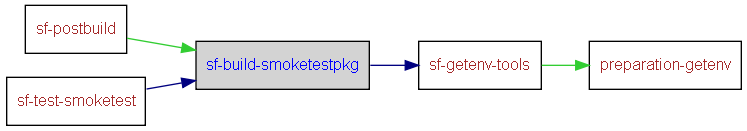

|
Helium API | ||||||
| prev next | frames no frames | ||||||
Location
d:\maintools\sf-config\common\build.test.xml:142:
Conditional execution
No conditions on target execution.
Preparing smoketest package (zip) for sending to ATS3
| Name |
|---|
| cmd |
| perl |
| perl |
| Name | Edit status |
|---|---|
| User editable properties | |
| build.drive | recommended |
| Internal properties | |
| build.id | discouraged |
| build.log.dir | discouraged |
| diamonds.build.id | never |

<target name="sf-build-smoketestpkg" depends="sf-getenv-tools">
<delete dir="${build.drive}/smoketest"/>
<delete file="${build.log.dir}/ATS_${build.id}_smoketest.log"/>
<echo message="INFO Copy smoketest source to EPOCROOT"/>
<copy todir="${build.drive}/smoketest">
<fileset dir="${sf.common.config.dir}/tools/ats/smoketest"/>
</copy>
<echo message="INFO Building smoketest"/>
<exec executable="cmd" dir="${build.drive}/smoketest/group" failonerror="false" append="true" output="${build.log.dir}/ATS_${build.id}_smoketest.log">
<arg value="/c"/>
<arg value="sbs -b bld.inf -c winscw_udeb.test"/>
</exec>
<echo message="INFO Creating smoketest testpackage"/>
<exec executable="perl" dir="${build.drive}/smoketest/group" failonerror="false" append="true" output="${build.log.dir}/ATS_${build.id}_smoketest.log">
<arg value="smoketest.pl"/>
</exec>
<copy file="${build.drive}/smoketest/group/smoketest.zip" todir="${sf.spec.test.package.location}" failonerror="false"/>
<echo message="INFO Updating smoketest package with test info"/>
<exec executable="perl" dir="${sf.common.config.dir}/tools/ats/" failonerror="false" append="true" output="${build.log.dir}/ATS_${build.id}_smoketest.log">
<arg value="ats_specialise_test_drop.pl"/>
<arg value="--test-drop-name=Smoketest-${build.id}"/>
<arg value="--device-name=${env.COMPUTERNAME}.ad-sfpd.intra"/>
<arg value="--src=${sf.spec.test.package.location}\smoketest.zip"/>
<arg value="--dest=${sf.spec.test.package.location}\${sf.spec.test.package.name}"/>
<arg value="--build-id=http://${sf.spec.publish.diamonds.server}${diamonds.build.id}"/>
</exec>
<!-- Now ready to send to ATS3 -->
</target>
|
Helium API | ||||||
| prev next | frames no frames | ||||||